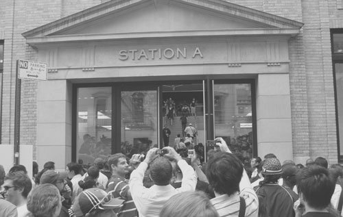

The day that commerce liberated Prince Street
There is a product, called the iPhone—have you heard of it? Apparently a lot of people are obsessed with it, and that became as big of a story as the product itself.

Crowds formed at Apple Stores around the country, particularly those in cities. At the Soho Apple Store, hundreds lined up to buy the phone and many more came just to see the spectacle and be witness to an international news story.
As the iPhone story went meta, so did iPhone commerce. It wasn’t possible for Apple to sell enough phones at this store in one day to make any significant revenue, but that’s very far from being the point. What matters is that the company’s product was exposed in a way most can only dream of, first as legitimate news and second as news associated with a young, trust-funded, urban crowd.
Apple isn’t the only beneficiary of such coverage; everything around the Apple Store is. Soho as a destination introduced itself to many Americans on Friday (and the one European who hasn’t already toured it). Now, Soho will grow even faster as district that people from around the world visit to recklessly spend their savings on luxury products. And this event, profitable to so many parties, would not have been possible with cars clogging the streets.
And so cars weren’t admitted. The store faces a narrow sidewalk of Prince Street that couldn’t hope to accomodate everyone, even if there weren’t television crews elbowing for space and attracting still more people. The crowd took over the street, and police closed the entire block to cars, forcing them to turn onto Mercer.
This brief span of mob rule, driven by capitalism of all things, foreshadows the eventual fate of Manhattan street space. In Soho the tension between commerce and automobiles is particularly high: the commerce is lucrative, the sidewalks are too small to accomodate the eager shoppers, and angry, honking motorists consume most of the available space. (And do it in vain, as their selfish purpose of finding free parking or getting across town quickly and in isolation is usually a failure.) Worst of all, motorists in Soho spend less money than everyone else. The bums!
Prince Street should be closed to cars at all times, not just when it is part of a live news event. Other cities have freed such commerce-saturated streets from cars that were only getting in the way; Prince deserves to be be liberated here. And after that is successful in all measures other than the griping of motorists, we can take back Bleecker and other streets that personal automobiles encumber in their motorized doddering.
While the rest of the country busily paves over forests to create outdoor main street shopping malls surrounded by parking lots, all we have to do to make sure the real thing stays better is shake off a few leeches.
Add a comment